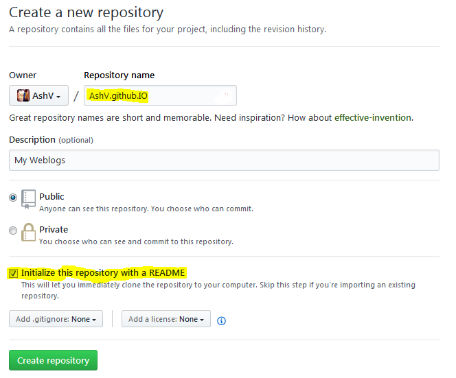
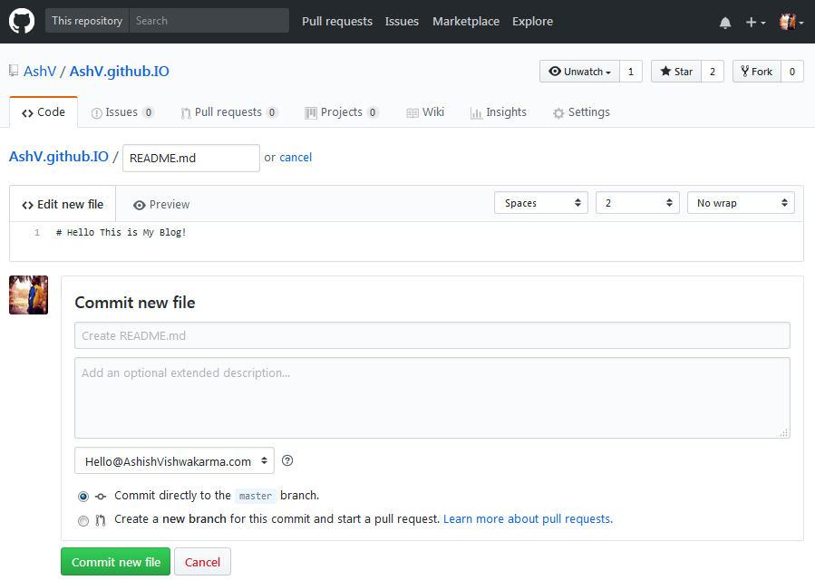
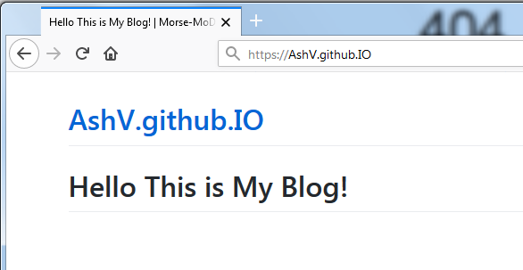
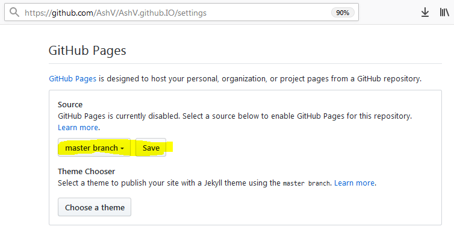
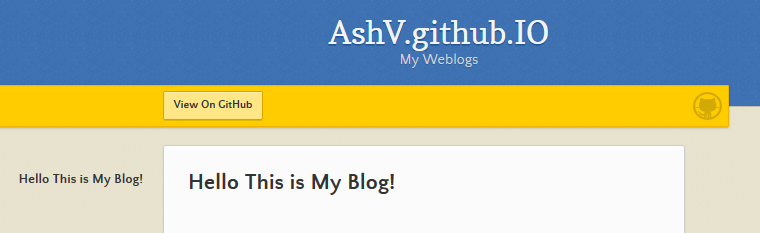

When I started web programming almost 10 years back, no one would have thought that people will go crazy some day to make their websites static. Back then it was PHP and WordPress era even if your website is almost static include 'header.php' was always there to run at server for obvious reasons.
Wordpress is still most popular open source CMS today, and heaven for non tech bloggers to get started quickly.
In last few years static site generators have gained popularity for various reasons (see here 7 reasons to use static site generator).
Now, if you are a techie and planning to starts writing, so it doesn’t suits you to go with traditional CMS approaches. There’s a huge list of awesome static site generators at StaticGen.com. You can compare and choose according to your requirements. You can set them up in your machine and get started, it will take hardly 30 minutes, and then write your post, then build, it will generate your static site, then push it to your server.
WAIT A MINUTE….. Title of this article says something EAZY , LAZY , PROGRAMMERS ???
Alright! but lemme make you clear If you are not a Programmer(coz it uses GitHub) and don’t like to delay the mess to latest way possible(i.e Lazy), Then this post is not for you, happily setup Wordpress or write in Medium.
This may not be best way, I am just sharing because this is how I have done.
Reasons I use GitHub Pages
- Can use my own Domain without extra cost.
- No extra setup, It’s just a GitHub repo.
- I don’t need to open any other editor, I can use Visual Studio, thanks to awesome VS extension by madskristensen
- I can correct typos online or even can write full articles.
- No formatting headaches, it’s markdown.
- It doesn’t stops me from using HTML, if I wish to.
- Full control over website theme and appearance
- Segregate content over multiple repos.
- No ads like wordpress.com hosting.
Setting up GitHub Pages
- Create a repository with name
user/organization name.github.io. this is not case sensitive. Like I have created with name AshV.github.IO. Check Initialize this repository with README checkbox so you don’t need to Create it again.

- Edit README.md file and enter some text.

- Now navigate to
https://user/organizationname.github.io, in my case https://AshV.github.IO, You will see the content of your README.md file. Congratulations! It is Live

- If it doesn’t appears immediately, try after sometime it takes few seconds to builds. If you are making page for some repository, you need to manually enable GitHub Pages from settings, you can choose different sources for your page whether it should load from master branch, docs folder in master branch or from gh-pages branch. here I have taken master branch for brevity.

- Your live page is looking very plain, you can click Choose a theme and select from templates provided by github for GitHub Pages, to make it better looking.

Using custom themes with Github Pages
If you didn’t like one of those themes which are shown after Choose a theme, you have option to make your own theme or use any Jekyll theme which works well with GitHub pages.
Find detailed documentation on GitHub Help